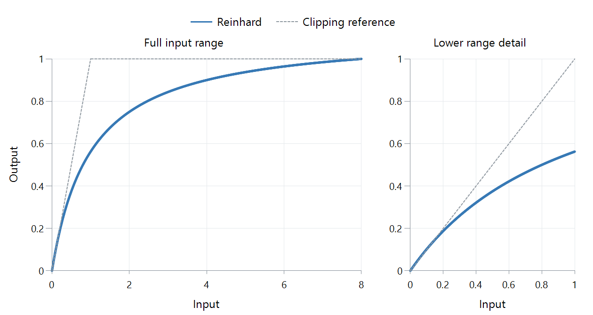

Tone Mapping Curve: Reinhard
Reinhard gives a simple answer to a difficult problem: progressively compress brighter values so that even an extremely bright input can fit below the output's maximum white. It takes its name from Erik Reinhard, coauthor of the 2002 paper Photographic Tone Reproduction for Digital Images.
The simplest version is output = input / (1 + input). Here, input is an already scaled, linear-light value; output white is 1. These are not video code values or measurements in nits.
| Input | Output, rounded |
|---|---|
| 0.1 | 0.091 |
| 1 | 0.500 |
| 4 | 0.800 |
| 10 | 0.909 |
Notice how much less room remains between the last two outputs. Bright details still have different values, but their contrast is reduced. The same compression also reaches into ordinary tones: an input of 1 becomes 0.5. This explains why preserving highlights can come with a flatter or dimmer-looking picture.
Those numbers illustrate the basic equation from the paper, not the exact output of an Emby playback session. Video implementations can adjust the curve and normalize it to a finite source peak; FFmpeg's software tonemap filter does both.

FFmpeg 8.1 Reinhard curve: parameter 0.5, source peak 8, output white 1, relative linear-light values for neutral gray. Dashed gray shows clipping.
At input 1, this peak normalization raises the basic equation's result from 0.5 to 0.5625. The graph represents the stated implementation, not an Emby preset.
There is another useful distinction when reading comparisons: the original research also includes exposure scaling and a spatially varying method. FFmpeg's Reinhard option implements a global curve, so a result produced by the full photographic method is not automatically representative of that setting.
For the alternative idea of leaving lower values unchanged and compressing only above a chosen transition, see Mobius.